THE REDESIGNED PARTNER EXPERIENCE Original project design
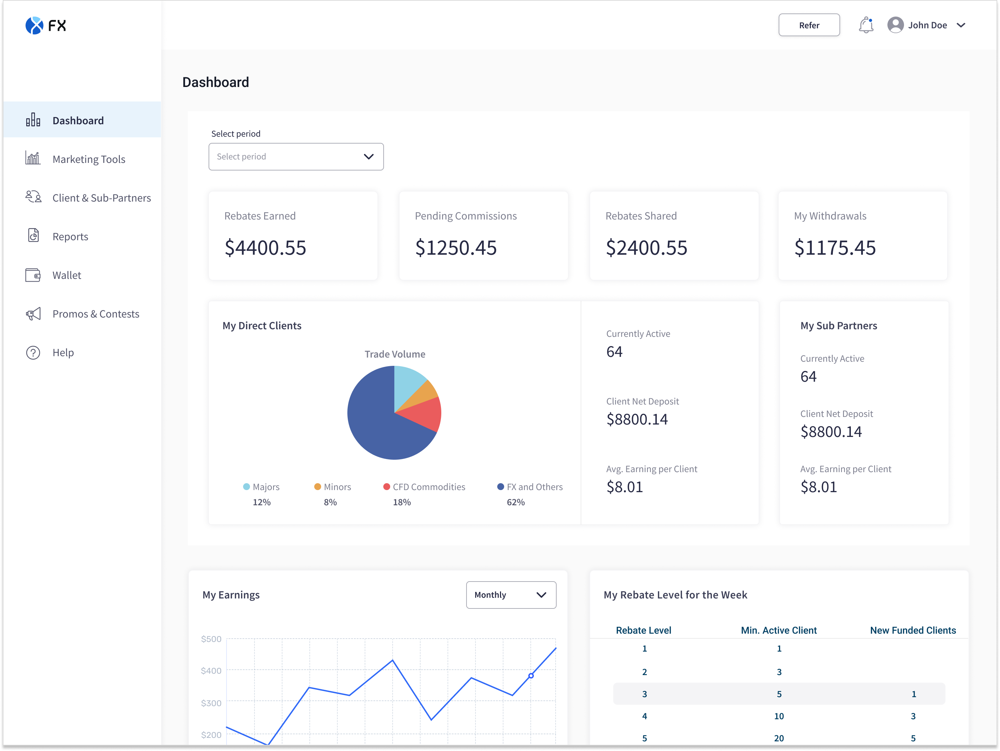
A single overview brings earnings, client activity, and the wider referral network into context. Figures shown are interface sample data.
01 / THE CONTEXT
A complex business. A fragmented view.
The portal served affiliates and introducing brokers who refer traders and earn commissions linked to trading activity. Some also managed sub-partners, creating a network with several layers of relationships.
As the legacy platform grew, its reporting became fragmented. Partners had to move between reports to piece together their earnings, clients, and performance.
Where I contributed
I joined at the start of the six-week inception phase, leading research planning, user interviews, journey mapping, and stakeholder workshops. I translated that discovery into a future-state journey and initial flows that informed roadmap, prioritisation, and technical planning.
01
Partner
Refers clients and builds a network
→
02
Clients & sub-partners
Participate across linked relationships
→
03
Performance & rebates
Reported back through the portal
A simplified view of the project’s partner ecosystem.
02 / DISCOVERY
Learn the business. Then follow the partner.
I started with domain experts and the product itself, then used interviews to understand the work happening around the portal.
01 / UNDERSTAND
Build a shared language
I worked with domain experts to understand the referral model, commission logic, and partner motivations. A test account and product walkthrough helped me trace onboarding, reporting, and everyday tasks before writing research questions.
Why it mattered A reporting problem could come from the interface, the business rules, or the process behind it. Discovery needed to distinguish all three.
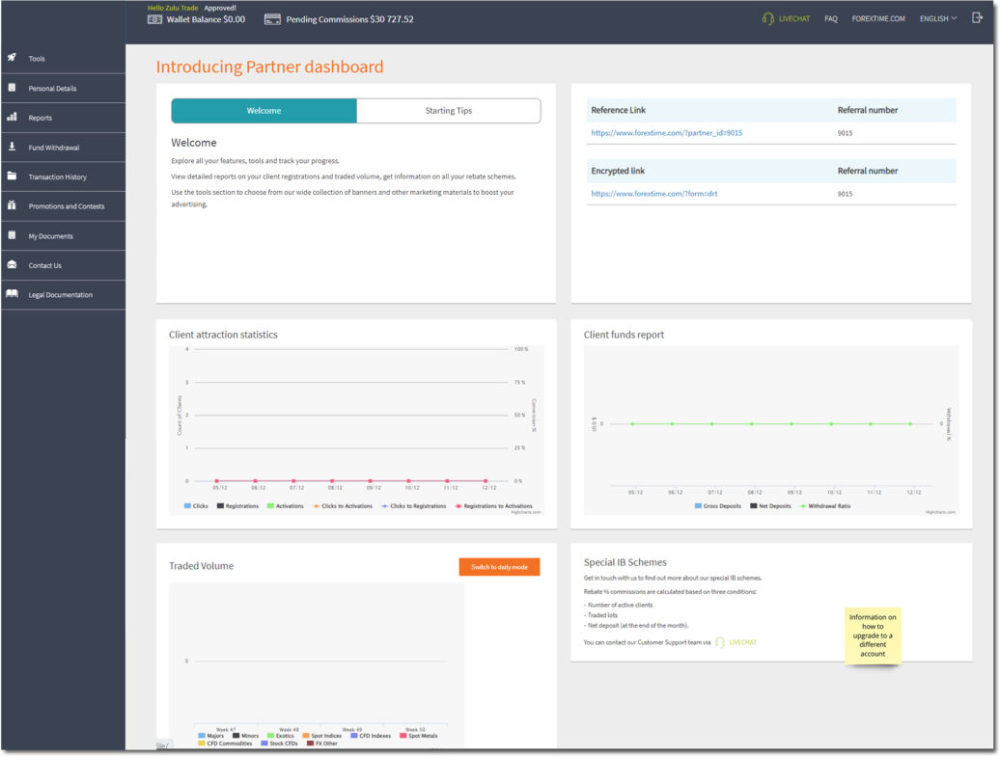
Legacy product walkthrough: reviewing how the existing interface surfaced account and performance information.
02 / PLAN
Research beyond the screen
I planned semi-structured interviews around partners’ recurring tasks, decisions, and challenges. Recruitment considered experience level, geographic market, and the size of a partner’s referral network.
The discussion guide moved from role and responsibilities to top tasks, a portal deep dive, and open feedback. It was reviewed with the Product Owner and team.
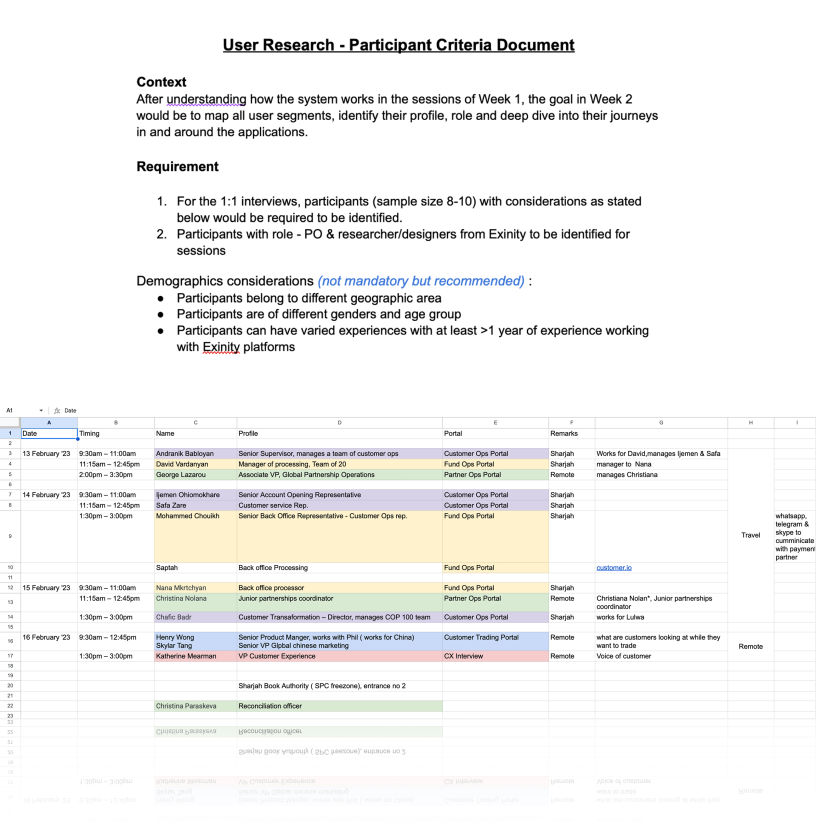
Research planning: defining participant criteria and coverage across the partner ecosystem.
QUESTIONS THAT GUIDED DISCOVERY
What do partners need to know?
Where do they lose context?
What prevents the next step?
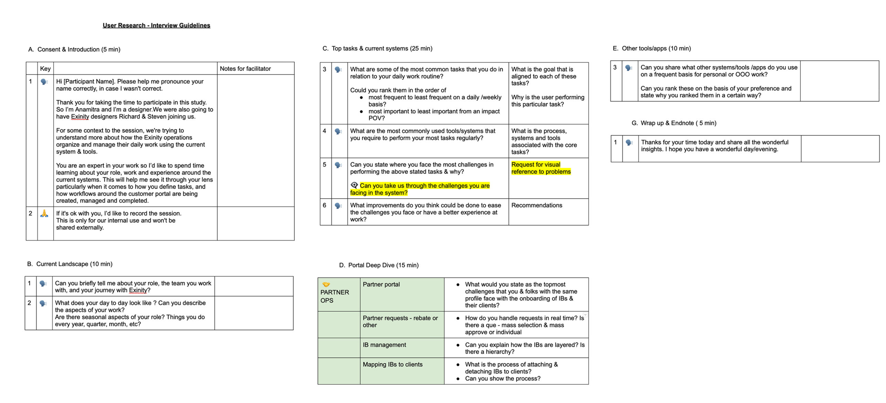
The original interview guide structured the conversation while leaving room to explore unexpected behaviours.
Understand different partner needs
Persona work connected partner types with their goals, responsibilities, and expectations.
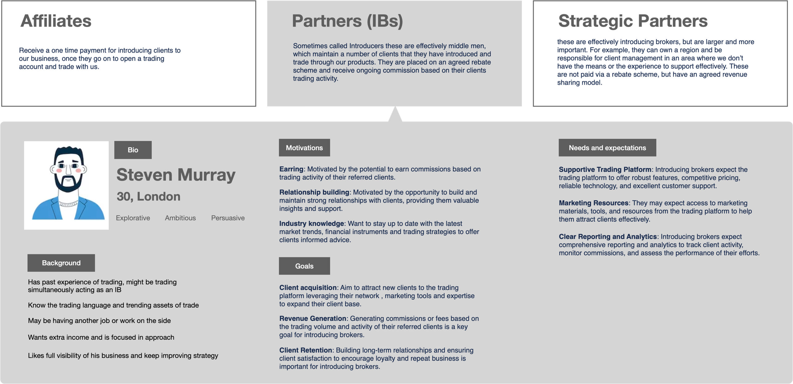
Partner segments and persona synthesis from discovery.
Learn from adjacent experiences
I reviewed stakeholder-suggested competitors, comparing dashboard structure, reporting, and usability patterns.
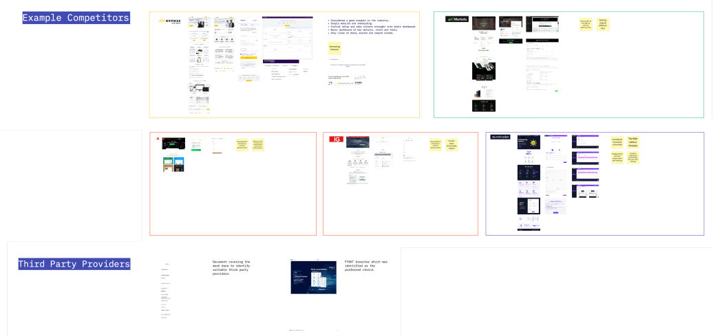
Competitor analysis used to inform opportunities, rather than copy an interface.
03 / DEFINE THE PROBLEM
Connect the research to a design response.
I expanded the existing journey map with interview findings, organising pain points around partner goals. Four problem areas became the focus of the revised brief.
WHAT WAS GETTING IN THE WAYDESIGN DIRECTION
01
Performance was scattered
Rebates, clients, deposits, and performance required separate reports. Tier and earning-level visibility were limited.
Bring the overview together
Surface key metrics in one dashboard, with routes into the detail behind them.
02
Acquisition lacked context
Partners had little visibility into which marketing channels or campaigns contributed to acquisition and value.
Make performance interpretable
Connect channel information with the reporting partners use to assess their business.
03
Data did not explain the next step
Complex reporting made it hard to connect current performance with progress and potential earnings.
Show progress with context
Pair trends and rebate tiers with clearer explanations and planning tools.
04
Rebates depended on manual checks
Weekly operational approvals created a delay before rebates appeared and became available for withdrawal.
Separate visibility from processing
Clarify the earning and approval journey. Faster processing also needs operational and technical changes.
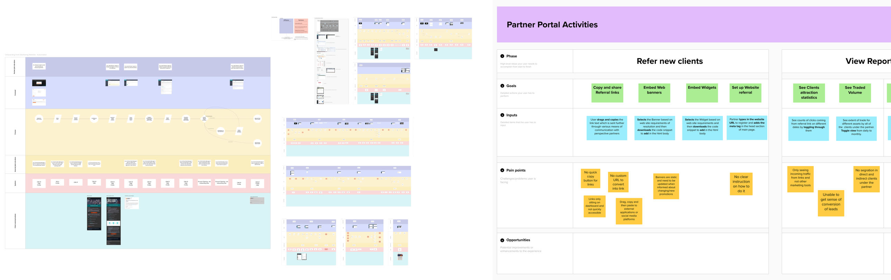
As-is journey synthesis: connecting research observations to specific goals and steps in the partner experience.
THE REFRAMED BRIEF
How might we help partners understand their business and make informed decisions about what comes next?
FROM PROBLEMS TO PRIORITIES
Make the trade-offs visible
I facilitated a stakeholder workshop to examine root causes, separating technical constraints, business decisions, and interaction problems.
We clustered ideas and used dot voting to prioritise directions. The resulting future-state journey connected the opportunities into a clearer end-to-end flow.
A boundary worth keeping A clearer interface can explain rebate processing; it cannot remove a manual approval step on its own.
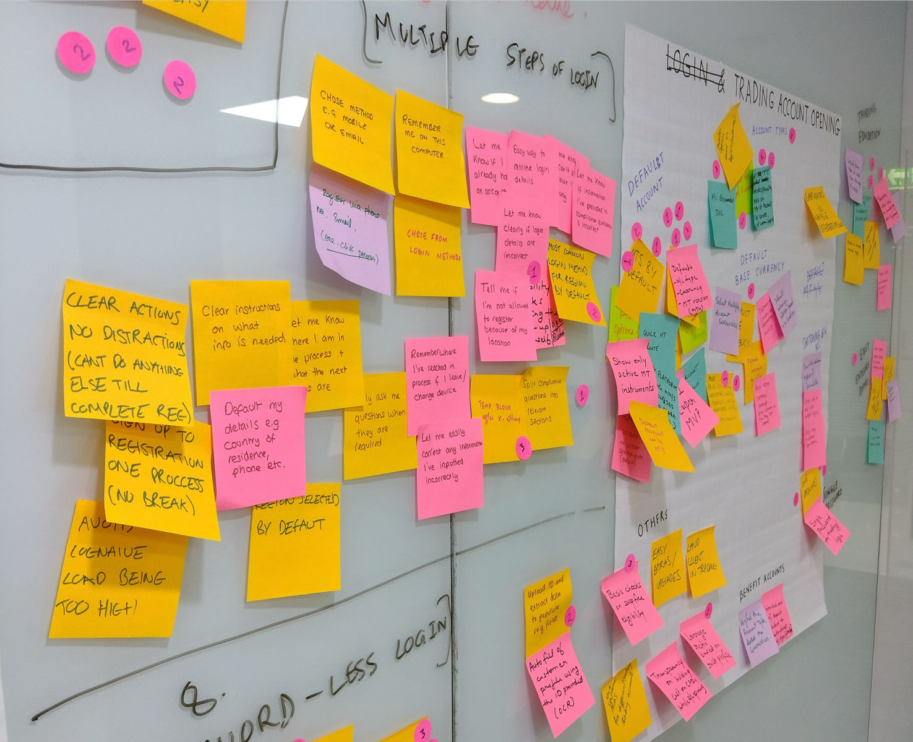
Workshop artefact: discussing root causes and prioritising opportunities with stakeholders.
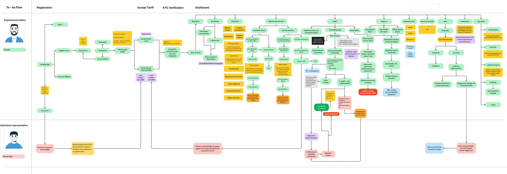
The to-be journey aligned proposed changes with partner goals and helped frame the work for delivery.
04 / THE DESIGN RESPONSE
From disconnected reports to a connected workspace.
The design direction brought performance, client relationships, and planning into a more coherent experience. These are original project interface designs.
01 / PERFORMANCE OVERVIEW
Start with the questions partners bring.
What have I earned? How is my network performing? What changed? The dashboard brings rebate summaries, direct-client activity, and trends into the first view, reducing the need to assemble a picture from separate reports.
The redesigned dashboard brings high-level performance and supporting reports together. All displayed values are sample interface data.
01
Orient first
Metric summaries establish the account’s current position before detailed charts.
02
Add context
Time periods, client activity, and earnings views support interpretation.
03
Keep the network visible
Direct clients and sub-partner reporting reflect the layered partner model.
02 / FLOWS BEFORE POLISH
Resolve the connections between screens.
I developed initial flows and reviewed them with stakeholders from technical and business perspectives. Feedback helped refine the designs presented at the end of inception.
Documenting those decisions gave the delivery team a starting point for more detailed flow design during sprints.
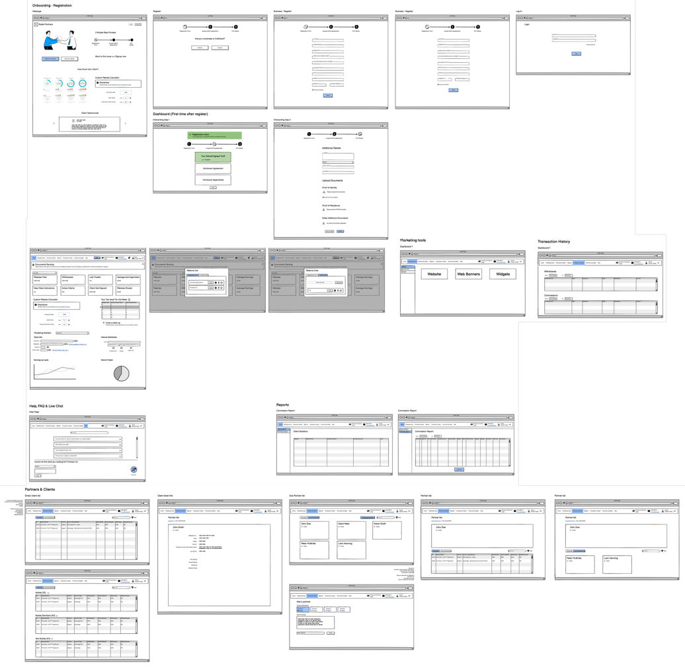
Early design explorations: connecting screens and working through interaction details before delivery.
03 / A FLEXIBLE OVERVIEW
Give reporting a useful hierarchy.
The dashboard direction included customisable widgets, earnings trends, rebate-level visibility, and marketing performance information.
A proposed rebate calculator connected planning inputs with potential earnings. These tools were intended to make reporting more useful for partners with different goals and network sizes.
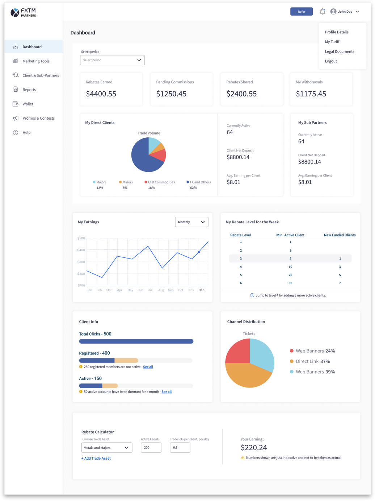
Full dashboard exploration: organising multiple reporting needs within a consistent layout. Values are sample data.
DESIGNING FOR DELIVERY
A shared foundation for the next phase.
Work with the implementation context
The component library used Material Design 2 as its foundation to align with the project’s Flutter requirement. The visual language was customised to the client’s brand guidelines.
I worked with the visual designer to identify component gaps and define consistent navigation, layout, and interaction patterns. Storybook documented component usage, states, behaviour, and accessibility criteria.
MY CONTRIBUTION
UX standards, functional requirements, and component review in collaboration with the visual designer.
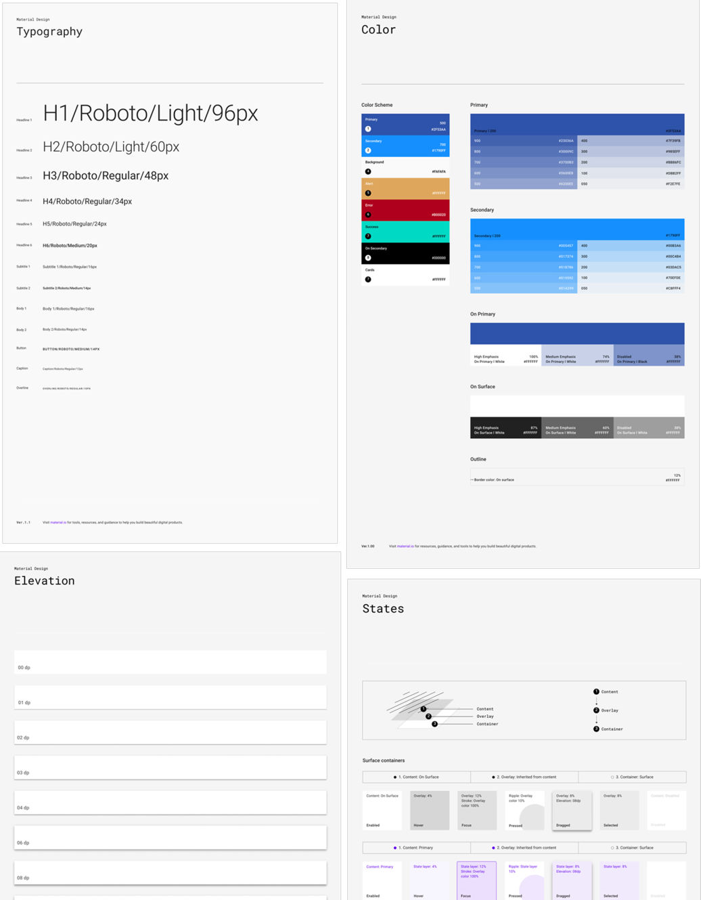
Design-system artefact: a consistent component foundation for the partner portal.
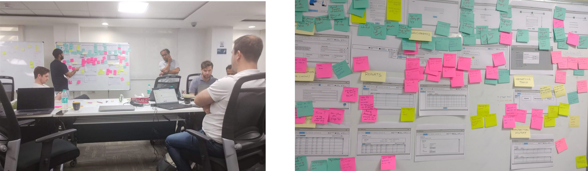
Collaborative working sessions helped keep research, design decisions, and delivery discussions connected.
05 / OUTCOMES & REFLECTION
Clarity was the deliverable. Confidence was the goal.
What the work established
The inception phase produced a research-informed direction, a future-state journey, and initial designs that informed product prioritisation and technical planning.
Qualitative feedback highlighted clearer information, more intuitive workflows, and greater confidence in performance tracking. These findings describe how participants perceived the design; they do not quantify a change in live performance.
What I would measure next
In follow-up validation, I would test whether partners can locate and explain a rebate, understand its approval state, and find the relevant client or network report without assistance.
Task completion, interpretation errors, and time spent switching between reports would help assess whether the design actually improves understanding.
WHAT I TOOK FORWARD
Making a complex product simpler starts with understanding what cannot be simplified away.
Commission logic, network relationships, and approval processes still need to exist. The design task is to make those relationships legible, while being clear about which changes require more than a new interface.